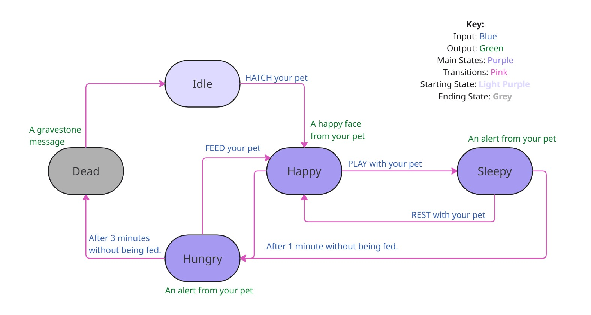
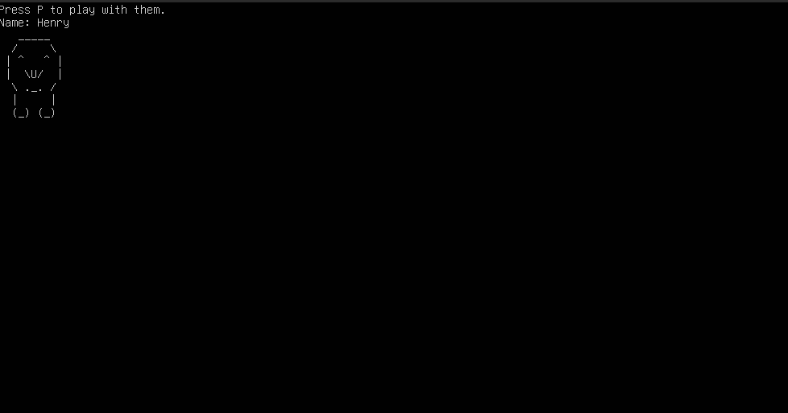

Terminal-Based Tamagotchi Game
For my final project in my ECE2039 Computational Engineering class I designed and implemented a terminal-based Tamagotchi game in C, with terminal based input/output support and simple assembly language make instructions.


Duration
1.5 weeks
Role
Developer
Team Size
1 member
Overview
This remake of the Tamagotchi game is a terminal-based simulation where players care for a virtual pet by managing its hunger, happiness, and mood. The game operates on a Finite State Machine, allowing the pet to transition between different states based on player interactions and time-based events. Players can feed, play with, and wash their pet to take care of it and keep it alive and happy.
Technical Approach
How did you build it? What were the key technical decisions?
- Terminal Printing: All printed output is in the form of ASCII art and text. Expressive sprites were printed to match the current mood the pet is in, along with displaying the pet's name, current mood, and any input that can take place.
- Input & Output: The game handles user input through keyboard interactions and displays output in the terminal. The ncurses library was used for handling the terminal interactions in order for the state machine to remain non-blocking.
- Makefile: A Makefile is used to compile the C source files and link the necessary libraries. A "make clean" command was also created which enables all files that are made during the "make" process to be easily deleted/
Challenges & Solutions
The most challenging parts of creating this game was creating the non-blocking inputs and time based state transitions. Using the ncurses library, I often ran into issues of the screen flickering or being completely erased except during inputs, which were fixed after researching and consulting forums. The biggest issue I had with the time library was figuring out if I should check it in the main function or helper functions.
This was challenging to figure out, but I am very happy with the game's implementation.
Results
My program works very well. Users will interact with the terminal, styled to look like a text-based game, to perform actions with their virtual pet. I personally am happy with the printing of the virtual pet and the overall flow of the game. For each mood, the virtual pet has a slightly different sprite showing a happier or more tired sprite. During the game, in each mood, actions are listed and when the input is typed in by the user, the state changes which is shown by the game dialog and sprites.
Most transitions are triggered by user keyboard input. For example, if the pet is Sleepy after being played with (Keyboard input: P), if the user inputs “R” on the keyboard, it will rest and immediately transition to the happy state. The game works very well, and outputs the desired behaviors.